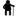
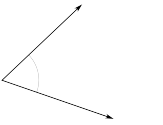
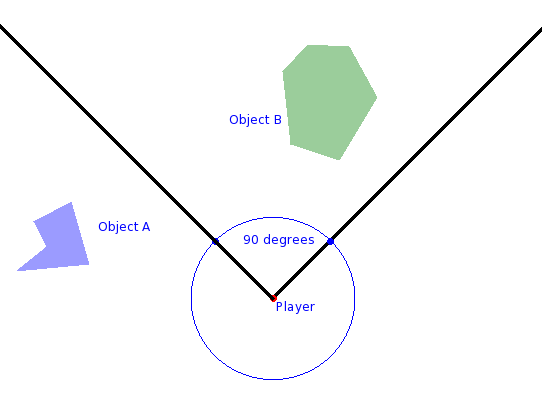
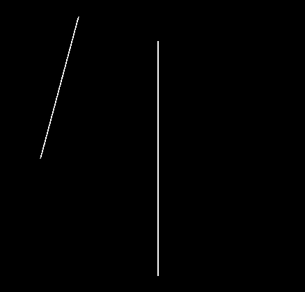
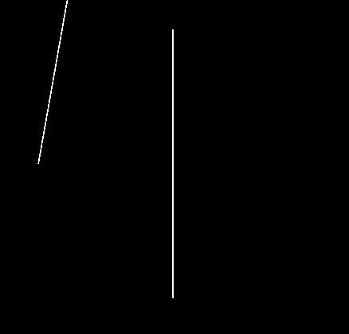
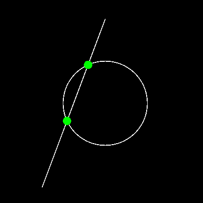

math2d.*
This page contains reference materials (docs) for the paid version of math2d.
 References marked with this icon also apply to the legacy version of math2d.
Vector Representations
In the context of these docs, a vector is any table or object with both an x- and a y-field. Additionally, we often deal with vectors as discrete collections of x and y values.
-- A table as a 2d-vector: < 10, 15 >
local v1 = { x = 10, y = 15 }
-- A circle display object; Also a 2d-vector: < 10, 15 >
local circ = display.newCircle( 10, 15, 5 )
-- Four discrete values repsenting the vectors: < 10, 15 > and < -1, 0 >
local x1 = 10
local y1 = 15
local x2 = -1
local y2 = 0
Standard Operations
| Addition | Subtraction | Difference | Length |
| Squared Length | Scaling | Normalizing | Dot Product |
| Cross Product | Normals | Angle To Vector | Vector To Angle |
| Angle Between | Distance Between | Is Within Distance |
Addition
Table/Object Vectors
math2d.add( v1, v2 [, altRet ] )
Adds two vectors v1 and v2 and returns a (table) vector unless altRet is true.
- v1, v2 - Vectors one and two.
- altRet - If this is true, the function returns two discrete values.
local circ = display.newCircle( 100, 100, 30 )
local rect = display.newRect( 150, 250, 60, 60 )
local vec = math2d.add( circ, rect ) -- Return a table
print("Results: ", vec.x, vec.y )
local vx,vy = math2d.add( circ, rect, true ) -- Return two numbers
print("Results: ", vx, vy )
Discrete Value Vectors
math2d.add( x1, y1, x2, y2 [, altRet ] )
Adds two vectors < x1, y1 > and < x2, y2 > and returns two discrete values unless altRet is true.
- x1, y1, x2, y2 - Four discrete values representing the two vectors: < x1, y1 > and < x2, y2 >.
- altRet - If this is true, the function returns a (table) vector.
local circ = display.newCircle( 100, 100, 30 )
local rect = display.newRect( 150, 250, 60, 60 )
local vx,vy = math2d.add( circ.x, circ.y, rect.x, rect.y ) -- Return two numbers
print("Results: ", vx, vy )
local vec = math2d.add( math2d.add( circ.x, circ.y, rect.x, rect.y, true ) -- Return a table
print("Results: ", vec.x, vec.y )
Subtraction
Table/Object Vectors
math2d.sub( v1, v2 [, altRet ] )
Subtracts vector v2 from vector v1 ( v1 - v2 ) and returns a (table) vector unless altRet is true.
Note: The returned value represents a direction vector equivalent to the direction from v2 to v1 translated to < 0, 0 >. Adding this vector to v2 gives you v1.
- v1, v2 - Vectors one and two.
- altRet - If this is true, the function returns two discrete values.
local circ = display.newCircle( 100, 100, 30 )
local rect = display.newRect( 150, 250, 60, 60 )
local vec = math2d.sub( circ, rect ) -- Return a table
print("Results: ", vec.x, vec.y )
local vx,vy = math2d.sub( circ, rect, true ) -- Return two numbers
print("Results: ", vx, vy )
Discrete Value Vectors
math2d.sub( x1, y1, x2, y2 [, altRet ] )
Subtracts vector < x2, y2 > from vector < x1, y1 > ( < x1 - x2, y1 - y2 > ) and returns two discrete values unless altRet is true.
Note: The returned value represents a direction vector equivalent to the direction from v2 to v1 translated to < 0, 0 >. Adding this vector to v2 gives you v1.
- x1, y1, x2, y2 - Four discrete values representing the two vectors: < x1, y1 > and < x2, y2 >.
- altRet - If this is true, the function returns a (table) vector.
local x1,y1 = 10,10
local x2,y2 = 15,-10
local vx,vy = math2d.sub( x1, y1, x2, y2 ) -- Return two numbers
print("Results: ", vx, vy )
local vec = math2d.sub( x1, y1, x2, y2, true ) -- Return a table
print("Results: ", vec.x, vec.y )
Difference
Table/Object Vectors
math2d.diff( v1, v2 [, altRet ] )
Subtracts vector v1 from vector v2 ( v2 - v1 ) and returns a (table) vector unless altRet is true.
Note: The returned value represents a direction vector equivalent to the direction from v1 to v2 translated to < 0, 0 >. Adding this vector to v1 gives you v2.
- v1, v2 - Vectors one and two.
- altRet - If this is true, the function returns two discrete values.
local circ = display.newCircle( 100, 100, 30 )
local rect = display.newRect( 150, 250, 60, 60 )
local vec = math2d.sub( circ, rect ) -- Return a table
print("Results: ", vec.x, vec.y )
local vx,vy = math2d.sub( circ, rect, true ) -- Return two numbers
print("Results: ", vx, vy )
Discrete Value Vectors
math2d.diff( x1, y1, x2, y2 [, altRet ] )
Subtracts vector < x1, y1 > from vector < x2, y2 > ( < x2 - x1, y2 - y1 > ) and returns two discrete values unless altRet is true.
Note: The returned value represents a direction vector equivalent to the direction from v1 to v2 translated to < 0, 0 >. Adding this vector to v1 gives you v2.
- x1, y1, x2, y2 - Four discrete values representing the two vectors: < x1, y1 > and < x2, y2 >.
- altRet - If this is true, the function returns a (table) vector.
local x1,y1 = 10,10
local x2,y2 = 15,-10
local vx,vy = math2d.sub( x1, y1, x2, y2 ) -- Return two numbers
print("Results: ", vx, vy )
local vec = math2d.sub( x1, y1, x2, y2, true ) -- Return a table
print("Results: ", vec.x, vec.y )
Length
Table/Object Vectors
math2d.length( v1 )
Calculates the length (magnitude) of scalar (encoded) vector.
- v1 - Vectors whose length we want to calculate.
local circ = display.newCircle( 100, 100, 30 )
local rect = display.newRect( 150, 250, 60, 60 )
local vec = math2d.sub( circ, rect ) -- Return a table
print("Result: ", math2d.length(vec) )
Discrete Value Vectors
math2d.length( x1, y1 )
Adds two vectors < x1, y1 > and < x2, y2 > and returns two discrete values unless altRet is true.
- x1, y1 - Two discrete values representing the vector < x1, y1 > whose length we want to calculate.
local x1,y1 = 10,10
local x2,y2 = 15,-10
local vx,vy = math2d.sub( x1, y1, x2, y2 ) -- Return two numbers
print("Result: ", math2d.length(vx, vy) )
Squared Length
Table/Object Vectors
math2d.length2( v1, )
Calculates the squared length of a vector.
- v1 - Vectors whose squared length we want to calculate.
local circ = display.newCircle( 100, 100, 30 )
local rect = display.newRect( 150, 250, 60, 60 )
local vec = math2d.sub( circ, rect ) -- Return a table
print("Result: ", math2d.length2(vec) )
Discrete Value Vectors
math2d.length2( x1, y1 )
Calculates the squared length of a vector.
- x1, y1 - Two discrete values representing the vector < x1, y1 > whose squared length we want to calculate.
local x1,y1 = 10,10
local x2,y2 = 15,-10
local vx,vy = math2d.sub( x1, y1, x2, y2 ) -- Return two numbers
print("Result: ", math2d.length2(vx, vy) )
Scaling
Table/Object Vectors
math2d.scale( obj, scaleBy [, altRet] )
Multiply < x, y > components of a vector by scaleBy.
- v1 - Vector we wish to scale.
- altRet - If this is true, the function returns two discrete values.
local vec = { x = 1, y = 0 }
vec = math2d.scale( vec, 30 ) -- Vector is now < 30, 0 >
Discrete Value Vectors
math2d.scale( vx, vy, scaleBy [, altRet ] )
Multiply vx and vy components of a vector by scaleBy.
- x1, y1 - Two discrete values representing the vector < x1, y1 > we wish to scale.
- altRet - If this is true, the function returns a table.
local vx = 1, vy = 0
vx, vy = math2d.scale( vx, vy, 30 ) -- Vector is now < 30, 0 >
Normalizing
Table/Object Vectors
math2d.normalize( v1 [, altRet ] )
Converts the input vector into a unit length (one) vector.
- v1 - The vector we wish to normalize.
- altRet - If this is true, the function returns two discrete values.
local vec = { x = 30, y = 30 }
vec = math2d.normalize( vec ) -- Vector is now < 0.707..., 0.707... >
Discrete Value Vectors
math2d.normalize( x1, y1 [, altRet ] )
Converts the input vector into a unit length (one) vector.
- x1, y1 - Two discrete values representing the vector < x1, y1 > we wish to normalize.
- altRet - If this is true, the function returns a (table) vector.
local vx = 30, vy = 30
vx, vy = math2d.normalize( vx, vy ) -- Vector is now < 0.707..., 0.707... >
Dot Product
Table/Object Vectors
math2d.dot( v1, v2 )
Calculates the inner product of two vectors v1 and v2 and returns a scalar value.
- v1, v2 - Vectors one and two.
local circ = display.newCircle( 100, 100, 30 )
local rect = display.newRect( 150, 250, 60, 60 )
print("Result: ", math2d.dot( circ, rect ) )
Discrete Value Vectors
math2d.dot( x1, y1, x2, y2 )
Calculates the inner product of two vectors < x1, y1 > and < x2, y2 > and returns a scalar value.
- x1, y1, x2, y2 - Four discrete values representing the two vectors: < x1, y1 > and < x2, y2 >.
local x1,y1 = 10,10
local x2,y2 = 15,-10
print("Result: ", math2d.dot( x1, y1, x2, y2 ) )
Cross Product
Table/Object Vectors
math2d.cross( v1, v2 )
Calculates the cross product of two vectors v1 and v2 and returns a scalar value.
- v1, v2 - Vectors one and two.
local circ = display.newCircle( 100, 100, 30 )
local rect = display.newRect( 150, 250, 60, 60 )
print("Result: ", math2d.cross( circ, rect ) )
Discrete Value Vectors
math2d.cross( x1, y1, x2, y2 )
Calculates the cross product of two vectors < x1, y1 > and < x2, y2 > and returns a scalar value.
- x1, y1, x2, y2 - Four discrete values representing the two vectors: < x1, y1 > and < x2, y2 >.
local x1,y1 = 10,10
local x2,y2 = 15,-10
print("Result: ", math2d.cross( x1, y1, x2, y2 ) )
Normals
Table/Object Vectors
math2d.normals( v1 [, altRet ] )
Returns two normal vectors n1 and n2 for the given vector v1 unless altRet is true.
Warning: The returned normals are not normalized (unit length) to save computation time.
- v1 - Vector for which we want the two normal vectors.
- altRet - If this is true, the function returns four discrete values representing two vectors.
local vec = { x = 1, y = 0 }
local n1, n2 = math2d.normals( vec )
-- n1 and n2 will contain the two vectors:
-- < 0, -1 > and < 0, 1 > (order may vary).
Discrete Value Vectors
math2d.normals( x1, y1 [, altRet ] )
Returns two normal vectors < nx1, ny1 > and < nx2, ny2 > for the given vector < x1, y1 > unless altRet is true.
Warning: The returned normals are not normalized (unit length) to save computation time.
- x1, y1 - Two discrete values representing the vector: < x1, y1 > for which we want two normals.
- altRet - If this is true, the function returns two tables representing two vectors.
local x1 = 1, y1 = 0
local nx1, ny1, nx2, ny2 = math2d.normals( x1, y1 )
-- < nx1, ny1 > and < nx2, ny2 > will be equivalent to:
-- < 0, -1 > and < 0, 1 > (order may vary).
Angle To Vector
math2d.angle2Vector( angle [, altRet ] )
Converts a (screen) angle into a normalized direction vector of the form < vx, vy >.
Warning: This library uses screen angles NOT Cartesian or polar.
- angle - Angle whose value we wish to convert to a unit length direction vector.
- altRet - If this is true, the function returns a table otherwise it returns two scalar values.
local angle = 135
local vec = math2d.angle2Vector( angle, true ) -- Return a table
print("The vector: " .. vec.x .. ", " .. vec.y )
local vx,vy = math2d.angle2Vector( angle ) -- Return two numbers
print("The vector: " .. vx .. ", " .. vy )
Vector To Angle
Table/Object Vectors
math2d.vector2Angle( v1 )
Takes a table vector and returns a screen angle. Warning: This library uses screen angles NOT Cartesian or polar.
- v1 - Vector we wish to calculate the angle (direction) for.
local circ = display.newCircle( 100, 100, 30 )
local rect = display.newRect( 150, 250, 60, 60 )
local vec = math2d.sub( circ, rect ) -- Return a table
print("Result: ", math2d.vector2Angle(vec) )
Discrete Value Vectors
math2d.vector2Angle( vx, vy )
Takes a two discrete values representing a vector and returns a screen angle.
- vx, vy - Two discrete values representing a vector < x1, y1 > we wish to calculate the angle (direction) for.
local x1,y1 = 10,10
local x2,y2 = 15,-10
local vx,vy = math2d.sub( x1, y1, x2, y2 ) -- Return two numbers
print("Result: ", math2d.vector2Angle(vx, vy) )
Angle Between

math2d.angleBetween( v1, v2 )
math2d.angleBetween( x1, y1, x2, y2 )
Returns the inner (shortest) angle between two vectors.
- v1, v2 - Vectors one and two.
- x1, y1, x2, y2 - Four discrete values representing the two vectors: < x1, y1 > and < x2, y2 >.
local vec1 = angle2Vector( -90, true )
local vec2 = angle2Vector( -15, true )
print( math2d.angleBetween( vec1, vec2 ) ) -- ~75 degrees
print( math2d.angleBetween( vec2, vec1 ) ) -- ~75 degrees
Distance Between
math2d.distanceBetween( v1, v2 )
math2d.distanceBetween( x1, y1, x2, y2 )
Returns the distance between two vectors. Shorthand notation for substraction followed by a length calculation.
- v1, v2 - Vectors one and two.
- x1, y1, x2, y2 - Four discrete values representing the two vectors: < x1, y1 > and < x2, y2 >.
local vec1 = { x = 0, y = 100 }
local vec2 = { x = 0, y = 0 }
print( math2d.distanceBetween( vec1, vec2 ) ) -- 100
print( math2d.distanceBetween( 0, 100, 0, 0 ) ) -- 100
Is Within Distance
math2d.isWithinDistance( v1, v2, distance )
math2d.isWithinDistance( x1, y1, x2, y2, distance )
Returns true if two vectors are with the specified distance of each other.
- v1, v2 - Vectors one and two.
- x1, y1, x2, y2 - Four discrete values representing the two vectors: < x1, y1 > and < x2, y2 >.
- distance - Distance for which true is returned. Greater than this returns false.
local vec1 = { x = 0, y = 100 }
local vec2 = { x = 0, y = 0 }
print( math2d.isWithinDistance( vec1, vec2, 100 ) ) -- true
print( math2d.isWithinDistance( vec1, vec2, 99.999 ) ) -- false
print( math2d.isWithinDistance( 0, 100, 0, 0, 100 ) ) -- true
print( math2d.isWithinDistance( 0, 100, 0, 0, 99.999 ) ) -- false
Advanced Operations
| In Field-Of-View | |||
| Is In Front | Is Behind | Is To Left | Is To Right |
| Line-Line Intersect | Segment-Segment Intersect | Segment-Circle Intersect |
In Field-Of-View
(image borrowed from Geek Blight) 
math2d.inFOV( target, observer, fov [, offsetAngle ] )
Returns true target is within observer's field of view as defined by fov and the optional rotation offsetAngle.
- target - A table vector. Usually a display object, but can be a table representing point in the world.
- observer - A table vector containing a rotation value in addition to the x and y values. Usually a display object.
- fov - The angle representing the entire field of vision of the observer from that observer's current forward facing vector.
- offsetAngle - Optional angle used to 'rotate' the fov from the observer's forward view. With this you can rotate the observer's view without rotating the object itself which is useful for animations that give the effect of rotating while the display object stays fixed.
-- See picture above for reference
-- objectA, objecB, and player are all display objects.
math2d.inFOV( objectA, player, 90 ) -- false
math2d.inFOV( objectB, player, 90 ) -- true
math2d.inFOV( objectA, player, 90, 270 ) -- true because we rotated the FOV by 270 degrees
Is In Front
Is Behind
Is To Left
Is To Right
math2d.isInFront( target, observer [, offsetAngle ] )
math2d.isBehind( target, observer [, offsetAngle ] )
math2d.isToLeft( target, observer [, offsetAngle ] )
math2d.isToRight( target, observer [, offsetAngle ] )
These are all shortcut functions that will quickly tell you if an object is: in-front, behind. to-the-left, or to-the-right of another object. This is exceptionally useful for things like missiles or enemies that need to 'steer' in the direction of a target.
This determiniation is based upon the current rotation of the observer and that angle can be modified with the optional offsetAngle.
- target - A table vector. Usually a display object, but can be a table representing point in the world.
- observer - A table vector containing a rotation value in addition to the x and y values. Usually a display object.
- offsetAngle - Optional angle used to 'rotate' the observers 'forward' vector for the calculation without actually rotating the observer.
-- See picture from 'In Field-Of-View ' above for reference
math2d.isInFront( objectA, player ) -- true
math2d.isInFront( objectB, player ) -- true
math2d.isToLeft( objectA, player ) -- true
math2d.isToRight( objectB, player ) -- true
Line-Line Intersect

math2d.lineLineIntersect( l1x1, l1y1, l1x1, l1y2, l2x1, l2y1, l2x2, l2y2 )
Checks to see if two lines intersect and if so where.
Returns two points < x, y > if an intersection occurs or nil meaning no intersection was found.
Warning: Although these 'lines' are specified as segments, they are treated as true (infinite) lines and as such any intersection of the infinite lines will be detected.
- l1x1 .. l2y2 - Points making up the two lines we wish to test. For example, < l1x1, l1y1 > is the position of the first point of the first line.
local x1,y1,x2,y2 = display.contentCenterX, display.contentCenterY-200,
display.contentCenterX, display.contentCenterY+200
local line1 = display.newLine( x1,y1,x2,y2 )
line1.strokeWidth = 2
local x3,y3,x4,y4 = display.contentCenterX-200, display.contentCenterY,
display.contentCenterX + 200, display.contentCenterY
local line2 = display.newLine( x3,y3,x4,y4 )
line2.strokeWidth = 2
local period = 60
local deltaAngle = 5
local startAngle = 0
local endAngle = 360
local angle = startAngle
local marker
local function testLineIntersect()
angle = angle + deltaAngle
display.remove(line2)
display.remove(marker)
if( angle > endAngle ) then
return
end
local vec = angle2Vector( angle, true )
vec = scaleVec( vec, 250 )
vec.x = vec.x + x3
vec.y = vec.y + y3
line2 = display.newLine( x3, y3, vec.x, vec.y )
line2.strokeWidth = 2
local intersect = math2d.lineLineIntersect( x3, y3, vec.x, vec.y, x1, y1, x2, y2 )
if( intersect ) then
marker = display.newCircle( intersect.x, intersect.y, 10, true, true )
marker:setFillColor(0,1,0)
end
timer.performWithDelay( period, testLineIntersect )
end
timer.performWithDelay( period, testLineIntersect )
Segment-Segment Intersect

math2d.segmentSegmentIntersect( s1x1, s1y1, s1x1, s1y2, s2x1, s2y1, s2x2, s2y2 )
Checks to see if two line segments intersect and if so where.
Returns two points < x, y > if an intersection occurs or nil meaning no intersection was found.
Note: For most game implementations/tests you will want to use this instead of the line-line version as it is a true segment-segment test and only checks for intersections within the limited ranges of the two segments.
- s1x1 .. s2y2 - Points making up the two lines we wish to test. For example, < s1x1, s1y1 > is the position of the first point of the first segment.
local x1,y1,x2,y2 = display.contentCenterX, display.contentCenterY-200,
display.contentCenterX, display.contentCenterY+200
local line1 = display.newLine( x1,y1,x2,y2 )
line1.strokeWidth = 2
local x3,y3,x4,y4 = display.contentCenterX-200, display.contentCenterY,
display.contentCenterX + 200, display.contentCenterY
local line2 = display.newLine( x3,y3,x4,y4 )
line2.strokeWidth = 2
local period = 60
local deltaAngle = 5
local startAngle = 0
local endAngle = 360
local angle = startAngle
local marker
local function testSegmentIntersect()
angle = angle + deltaAngle
display.remove(line2)
display.remove(marker)
if( angle > endAngle ) then
return
end
local vec = angle2Vector( angle, true )
vec = scaleVec( vec, 250 )
vec.x = vec.x + x3
vec.y = vec.y + y3
line2 = display.newLine( x3, y3, vec.x, vec.y )
line2.strokeWidth = 2
local intersect = math2d.segmentSegmentIntersect( x3, y3, vec.x, vec.y , x1, y1, x2, y2 )
if( intersect ) then
print(intersect)
marker = display.newCircle( intersect.x, intersect.y, 10, true, true )
marker:setFillColor(0,1,0)
end
timer.performWithDelay( period, testSegmentIntersect )
end
timer.performWithDelay( period, testSegmentIntersect )
Segment-Circle Intersect
math2d.segmentCircleIntersect( p1, p2, circle, radius )

Checks to see if the line segment defined by points p1 and p2 intersects with a circle of the specified radius.
Possible returns:
- nil - No intersections.
- i1, nil - Table containing point of first intersection and nil meaning no second intersection.
- i1, i2 - Tables containing points of first and second intersection. (This is the maximum possible number of intersections that can occur.)
Credit: Derived from code by: Davis Claiborne (https://github.com/davisdude/mlib/blob/master/mlib.lua)
- p1, p2 - Table vectors representing the endpoints of a line segment.
- circle - Table or object representing the position of the circle.
- radius - The radius of said circle.
local x1,y1,x2,y2 = display.contentCenterX, display.contentCenterY+200,
display.contentCenterX, display.contentCenterY-200
x1 = x1 - 150
x2 = x2
local line1 = display.newLine( x1,y1,x2,y2 )
line1.strokeWidth = 2
local p1 = { x = x1, y = y1 }
local p2 = { x = x2, y = y2 }
local circ = display.newCircle( display.contentCenterX, display.contentCenterY, 100 )
circ:setFillColor(0,0,0,0)
circ.strokeWidth = 2
local i1, i2 = math2d.segmentCircleIntersect( { x = p1.x, y = p1.y},
{ x = p2.x, y = p2.y},
circ,
100 )
if( i1 ) then
local hit = display.newCircle( i1.x, i1.y, 10 )
hit:setFillColor(0,1,0)
end
if( i2 ) then
local hit = display.newCircle( i2.x, i2.y, 10 )
hit:setFillColor(0,1,0)
end